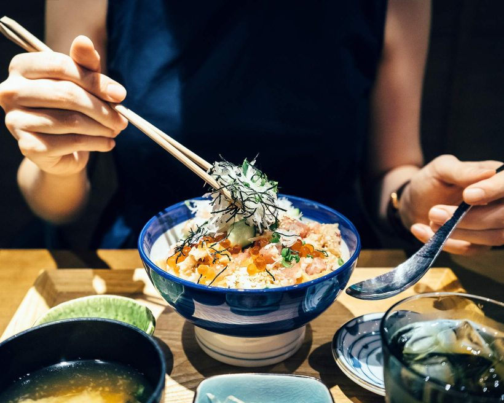
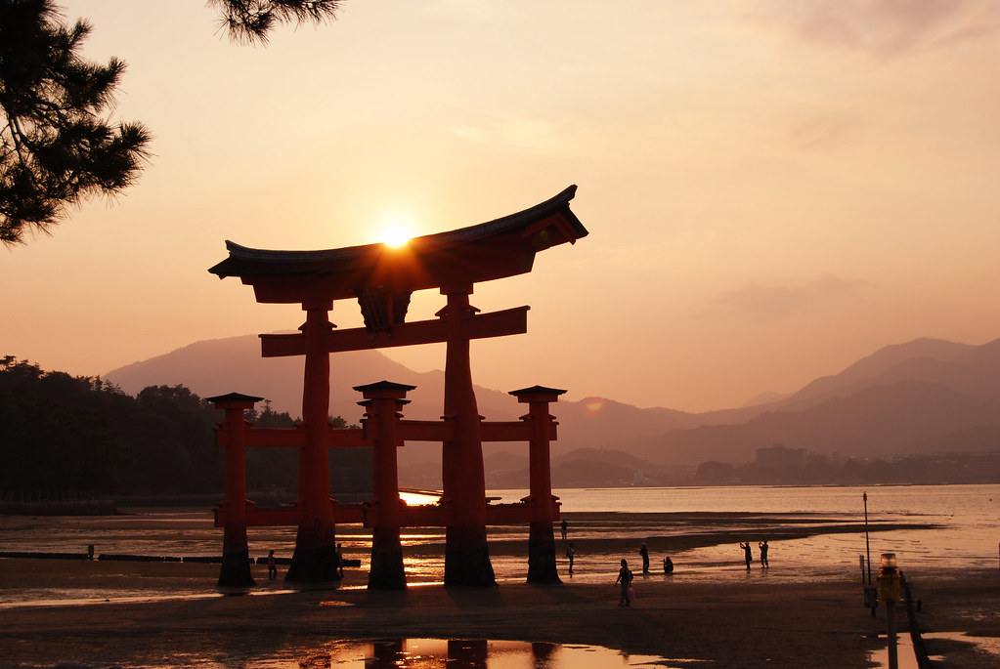

Japán kultúra - Hagyományok ⛩️
Tudtad?
A japán hagyományok és hétköznapi szokások gyakran meglepőek és érdekesek lehetnek azok számára, akikkel először találkoznak. Például a japánok egy jellegzetes módon, fordítva gyújtják meg a gyufát: nem maguktól el, hanem maguk felé húzzák a gyufát a foszforon, nehogy a velük szemben állót megsértsék.
Az ehhez hasonló apró, ám jellegzetes szokások kihangsúlyozzák a precizitást és a figyelmet a részletekre, amelyek fontosak a japán hétköznapokban és hagyományokban egyaránt.
Japán hagyományok és hétköznapi szokások
Japán különleges hagyományai és hétköznapi szokásai évszázados kulturális gyökerekre vezethetők vissza, melyek mélyen befolyásolják a japán életet és társadalmat. A hagyományok szerteágazóak és változatosak, sokszor összefonódnak a vallási, művészeti és mindennapi élet aspektusaival. Szellemiségük távol áll mindentől, amit megszokhattunk, Japán egy külön világ.
A japánok étkezési szokásai is egyediek, az étkezésükhöz való kötődésüket és az étel iránti tiszteletüket fejezik ki. Az evőpálcikák, vagy Hashi (箸), elengedhetetlen eszközök az étkezésben. Az evőpálcikák használata nem csupán egy eszköz, hanem egyfajta kultúrális kifejeződés is. Az étkezés és főleg a teázás, mint szokás, gyakran a földön történik, tradicionális alacsony asztaloknál, magán a Tatami-n (畳) vagy paplanokon ülve, amit Zabuton-nak (褥) neveznek. Ez a hagyományos stílusú étkezés lehetővé teszi az emberek számára, hogy közvetlenebb kapcsolatba kerüljenek az étellel és egymással. Az ilyen módon történő étkezés erősíti a családi vagy baráti kötelékeket, és lehetőséget ad az embereknek arra, hogy megosszák az ételt és az élményt.
 A japán kultúrában a tisztelet kiemelkedő fontossággal bír. Ez az értékrendszer áthatja mindennapi életüket és emberi kapcsolataikat. Az udvariasság és tisztelet megnyilvánul például a meghajlásban, köszönésben és tisztelettudó beszédformákban. A tisztelet az idősebbek iránt, a hagyományok őrzése és az egyéni felelősség elfogadása is fontos része ennek a kulturális normának a japán társadalomban. A japán hagyományok között kiemelkedő szerepet tölt be a tértisztaság és az udvariasság. A tértisztaság tiszteletet fejez ki, amely megnyilvánul az otthonok rendjében, a személyes higiéniában és a környezet gondos karbantartásában. Az udvariasság és a tisztelet megjelenik az emberi kapcsolatokban is, például a meghajlásban, a taktikus beszédben és az összehangolt cselekedetekben.
A japán kultúrában a tisztelet kiemelkedő fontossággal bír. Ez az értékrendszer áthatja mindennapi életüket és emberi kapcsolataikat. Az udvariasság és tisztelet megnyilvánul például a meghajlásban, köszönésben és tisztelettudó beszédformákban. A tisztelet az idősebbek iránt, a hagyományok őrzése és az egyéni felelősség elfogadása is fontos része ennek a kulturális normának a japán társadalomban. A japán hagyományok között kiemelkedő szerepet tölt be a tértisztaság és az udvariasság. A tértisztaság tiszteletet fejez ki, amely megnyilvánul az otthonok rendjében, a személyes higiéniában és a környezet gondos karbantartásában. Az udvariasság és a tisztelet megjelenik az emberi kapcsolatokban is, például a meghajlásban, a taktikus beszédben és az összehangolt cselekedetekben.
A hétköznapi szokásokban gyakran megfigyelhetők olyan tradicionális tevékenységek, mint a Torii-k (鳥居, sintó kapuk) és teaházak látogatása, a kimono viselése vagy akár a Sakura (桜, cseresznyevirágzás) megtekintése a tavaszi időszakban. A hagyományos ünnepek, mint például a Oshōgatsu (御正月, új év), az Obon (お盆, az ősök szellemeinek tisztelete) vagy a Matsuri (祭, fesztiválok), szintén fontosak a japán kultúrában és az emberek életében. Az írott és íratlan szabályokon túlmenően a japánok fontosnak tartják a csoportidentitást és a családi kapcsolatokat. Egyedi értékeik és hagyományaik tiszteletben tartása mellett a modern japán társadalom egyensúlyt teremt a hagyomány és az innováció között, ami sokszor érdekes és gazdag kulturális keveréket eredményez. Japán hagyományai és hétköznapi szokásai mély és gazdag kultúrát tükröznek, amelyek az évszázadok során alakultak ki és formálták a japán társadalmat és identitást.
(forrás: OpenAI ChatGPT 3.5)